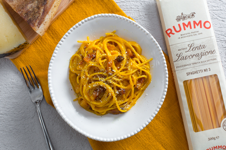
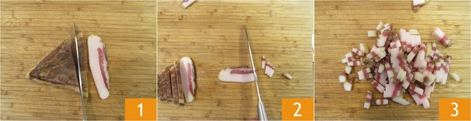
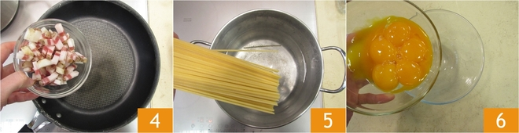
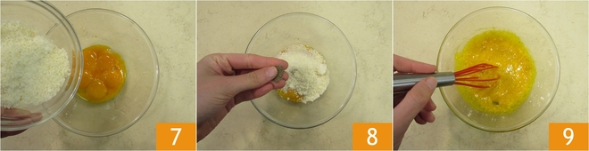
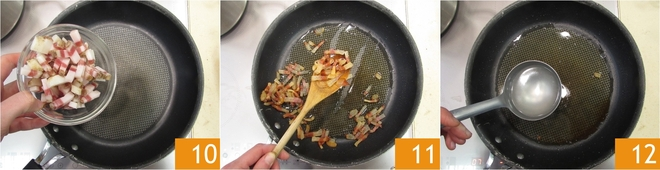
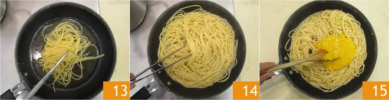
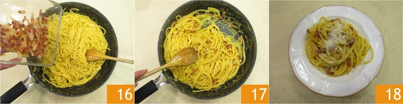

Introduzione |
Origini |
| In questa ricetta vi sveliamo passo dopo passo come ottenere la carbonara originale, cremosa e irresistibile, da preparare con gli spaghetti o con il formato di pasta che preferite. | La versione più accreditata racconta che la prima Carbonara fu preparata nel 1944 a Roma, al Vicolo della Scrofa, con gli ingredienti a disposizione dei soldati americani: uova, bacon e formaggio. La fantasia di un cuoco romano trasformò questi sapori nel primo prototipo della carbonara. Da allora, la ricetta è evoluta fino a quella che tutti conosciamo e amiamo oggi. |
1 |
Per preparare gli spaghetti alla carbonara cominciate mettendo sul fuoco una pentola con l’acqua salata per cuocere la pasta. Nel frattempo eliminate la cotenna dal guanciale e tagliatelo prima a fette e poi a striscioline spesse circa 1cm. La cotenna avanzata potrà essere riutilizzata per insaporire altre preparazioni. |
 |
2 |
Versate i pezzetti di guanciale in una padella antiaderente e rosolate per circa 10 minuti a fiamma medio alta, fate attenzione a non bruciarlo altrimenti rilascerà un aroma troppo forte. Nel frattempo tuffate gli spaghetti nell’acqua bollente e cuoceteli al dente. Intanto versate i tuorli in una ciotola. |
 |
3 |
Aggiungete il Pecorino e insaporite con il pepe nero. Amalgamate il tutto con una frusta a mano, sino ad ottenere una crema liscia. |
 |
4 |
Intanto il guanciale sarà giunto a cottura; spegnete il fuoco e utilizzando un mestolo prelevatelo dalla padella, lasciando il fondo di cottura all'interno della padella stessa. Trasferite il guanciale in una ciotolina e tenetelo da parte. Versate una mestolata d’acqua della pasta in padella, insieme al grasso del guanciale. |
 |
5 |
Scolate la pasta al dente direttamente nel tegame con il fondo di cottura. Saltatela brevemente per insaporirla. Togliete dal fuoco e versate il composto di uova e Pecorino nel tegame. Mescolate velocemente per amalgamare |
 |
6 |
Per renderla ben cremosa, al bisogno, potete aggiungere poca acqua di cottura della pasta. Aggiungete il guanciale, mescolate un'ultima volta e servite subito gli spaghetti alla carbonara aggiungendo ancora del pecorino in superficie e un pizzico di pepe nero |
 |